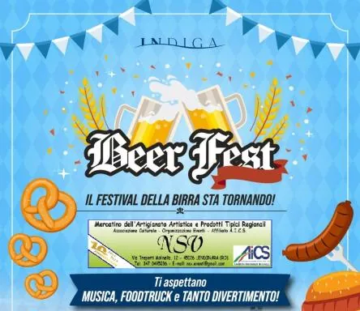

dom 4 ott
InDiga BeerFest!
Sabato 20 e Domenica 21 - Sabato 27 e Domenica 28 Settembre 2025
 Indicazioni
Indicazioni
- Costi e prenotazioni
- Costo non indicato · Prenotazione non indicata
- Programma
- Programma da verificare. Apri la fonte ufficiale per orari e possibili aggiornamenti.
- In caso di maltempo
- Nessuna indicazione specifica pubblicata.
- Note
- Acquisito automaticamente dalla fonte.
L’EVENTO
Descrizione completa
“INDIGA BEERFEST! - IL MERCATINO”
Sabato 20 e Domenica 21 - Sabato 27 e Domenica 28 Settembre 2025
Stabilimento Balneare "InDiga" - Via San Marco, 3
Sottomarina di Chioggia (VE)
A Sottomarina ritorna l’appuntamento con "InDiga Beerfest!" e, naturalmente, non poteva mancare anche un bel Mercatino!
L’Associazione Culturale NSV Organizzazione Eventi APS, affiliata A.I.C.S. – Comitato Provinciale di Rovigo, sarà presente nelle quattro giornate della manifestazione con il Mercatino dedicato alla creatività, alle tradizioni, ai sapori e al piacere di curiosare tra bancarelle sempre diverse.
Passeggiando tra gli espositori si potranno scoprire artigianato artistico, opere d’ingegno creativo, idee regalo originali e curiosità per la casa e il tempo libero, incontrando anche artigiani pronti a mostrare dal vivo tecniche e lavorazioni.
E per i più golosi? Non mancheranno prodotti enogastronomici tipici regionali e italiani, specialità dolci e salate, degustazioni e tante prelibatezze artigianali tutte da scoprire… e magari da portare a casa!
Spazio anche al mondo del benessere e della salute naturale, con prodotti, rimedi e servizi dedicati alla cura del corpo e a uno stile di vita più armonioso e sostenibile.
Ma il vero protagonista sarà il clima di festa: Food Truck, tanta birra, Live Band, intrattenimento e giochi per i più piccoli accompagneranno le quattro giornate dell’InDiga Beerfest!
Per info Mercatino e partecipazione come Espositore: Raffaella 347.0495286
Email: nsv.eventi@gmail.com
https://www.facebook.com/NsvOrganizzazioneEventi
IL PROGRAMMA
Programma e orari
Appuntamenti raccolti dalle fonti elencate. Dove manca un orario, non è ancora disponibile in questa scheda.
Programma pubblicato
- Dal 2026-10-04 al 2026-10-04
INFORMAZIONI UTILI
Prima di partire
- Controllare la fonte prima di partire.
ORGANIZZAZIONE